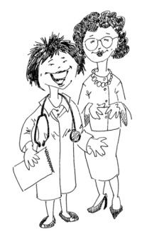

Please click on the "Usage" link next to each definition to see examples of how to use these medical terms.言葉の右にリンクしているボタンをクリックすると、医学用語を使う場面が出てきます。
【A】
abdominal pain 腹痛 ふくつう hu01 su01
account number 登録番号 とうろくばんごう i04
accumulation of internal fat 内臓脂肪蓄積 ないぞうしぼうちくせき hi02
Achilles tendon アキレス腱 アキレスけん shi02
acne にきび 吹出物 ふきでもの me01
acquired 後天性 こうてんせい shi06
Acquired Immune Deficiency Syndrome (AIDS)
後天性免疫不全症候群 こうてんせいめんえきふぜんしょうこうぐん e01
active (being) 生き生きしている いきいきしている chi03
acupuncture 針治療 はりちりょう yo01
acupuncture therapy 針療法 はりりょうほう yo01
acute alcohol intoxication, alcohol poisoning
急性アルコール中毒 きゅうせいアルコールちゅうどく a02
acute eruptive infectious (contagious) disease
急性発疹性伝染病 きゅうせいはっしんせいでんせんびょう mi02
acute gastritis 急性胃炎 きゅうせいいえん i01
acute stage 急性期 きゅうせいき ga02
address 住所 じゅうしょ ga02
adenoids 扁桃腺肥大 へんとうせんひだい su02
adhesive capsulitis 密着性被嚢炎 みっちゃくせいひのうえん go02
adhesive tape 絆創膏 ばんそうこう ka02
adrenocortical hormone 副腎皮質ホルモン ふくじんひしつホルモン ho02
after meal 食後 しょくご shi01
aftereffects 後遺症 こういしょう ku03
aging society (an) 高齢化社会 こうれいかしゃかい chi03 ro01
AIDS エイズ e01
airsickness 飛行機酔い ひこうきよい ji01
alcohol dependence アルコール依存症 アルコールいぞんしょう a02
alcoholism アルコール中毒 アルコールちゅうどく a02
alcoholics アルコール中毒者 アルコールちゅうどくしゃ a02
allergen アレルゲン a01
allergy アレルギー a01
allergic (to) にアレルギー hi03
allergic conjunctivitis アレルギー性結膜炎 アレルギーせいけつまくえん mo01
allergic constitution アレルギー体質 アレルギーたいしつ hi03
allergic reaction アレルギー反応 アレルギーはんのう hi03
allergic rhinitis アレルギー性鼻炎 アレルギーせいびえん ku01
aloe sap アロエ汁 アロエじる ya01
alopecia areata 円形脱毛症 えんけいだつもうしょう ha02
alveolar pyorrhea 歯槽膿漏 しそうのうろう ko01
Alzheimer’s disease アルツハイマー病 アルツハイマーびょう ke01 a04
ambulance 救急車 きゅうきゅうしゃ sa01
Americal College of Rheumatology
全米リウマチ協会 ぜんべいリウマチきょうかい f01
amount due 請求額(患者の支払額) せいきゅうがく sa01
amputation 切断 せつだん shi06
amyosthenia 筋無力症 きんむりょくしょう ki01
amyotrophy 筋萎縮症 きんいしゅくしょう ki01
analgesic(s) 鎮痛剤 ちんつうざい chi02
anemia 貧血 ひんけつ di01
anesthesia 麻酔 ますい ki03
aneurysm 動脈瘤 どうみゃくりゅう ku03
angina pectoris 狭心症 きょうしんしょう ki02
anorexia nervosa 神経性食欲不振症(拒食症)
しんけいせいしょくよくふしんしょう（きょしょくしょう） di01
antibacterial 抗菌性の こうきんせいの py01
antibiotics 抗生物質 こうせいぶっしつ se01
antibody 抗体 こうたい me02
antidiarrheic 下痢止め げりどめ ka02
antigen 抗原 こうげん me02
antihistamines, antihistamine agent (drug) 抗ヒスタミン剤 こうヒスタミンざい hi03
antioxidants アンタイオキシダンツ酸化防止剤 さんかぼうしざい a03
appendectomy 虫垂切除 ちゅうすいせつじょ ki03
appendicitis 虫垂炎 ちゅうすいえん ki03
apply running tap water 水道水をかける すいどうすいをかける ya01
appointment 予約(病院受診の) よやく（びょういんじゅしんの） ga02
arch of a foot 土踏まず つちふまず ga01
arrhythmia 不整脈 ふせいみゃく su03
arthralgia 関節の痛み かんせつのいたみ ka03
arteriosclerosis 動脈硬化 どうみゃくこうか ro01 chi01
artery 動脈 どうみゃくku03 ku03
arthritis 関節炎 かんせつえん ka03 ke01
artificial arm 義手 ぎしゅ shi06
artificial leg 義足 ぎそく shi06
artificial nutrients 人工栄養剤 じんこうえいようざい e02
athlete’s foot, etc. (fungal infection)
水虫など(真菌感染) みずむしなど（しんきんかんせん） ga01
asthma 喘息 ぜんそく ha03
atmospheric pressure (high low) 気圧(高、低) きあつ（こう、てい) ji01
attending physician 主治医 しゅじい ka01 ki03
autonomic imbalance, autonomic disorders
自律神経失調症 じりつしんけいしっちょうしょう he01 ji01
【Ｂ】
baby boomer ベービーブーマー bi01
baby toe 足の小指 あしのこゆび ga01
back of a foot 足の背 あしのせ ga01
back pain 腰痛 ようつう hu02 ya01
backache 腰の痛み こしのいたみ chi04
bacterium, bacteria 細菌 さいきん mo01 mi01
bad tooth (a) 虫歯 むしば to01
balance 残額 ざんがく i04
balanced diet バランスの取れた食事 バランスのとれたしょくじ chi01
baldness 禿 はげ ha02 ho01
bandage 包帯 ほうたい ka02
Band-Aid® バンドエイド ka02
barium バリウム i01
barometric pressure (high, low) 気圧（高、低）きあつ（こう、てい） ji01
Basedow’s disease バセドー病 バセドーびょう ho02
B cell B 細胞 B さいぼう me02
be forgetful 物忘れしやすい ものわすれしやすい a04
be interested in 興味をもつ きょうみをもつ a04
be out of breath 息切れする いきぎれする ki02 su03
be paralyzed 麻痺する まひする shi06
be pregnant 妊娠中 にんしんちゅう ga02
be senile 呆けている ぼけている ke01
become forgetful 物忘れする ものわすれする ke01 a04
become senile 呆ける ぼける chi03
become thin 痩せる やせる di01
become weak 弱った よわった ke01
bedridden 寝たっきり ねたっきり ke01
before meal 食前 しょくぜん shi01
being active 活き活きしている いきいきしている chi03
being unconscious 意識不明である いしきふめいである sa01
belly button おへそ shi03
benign prostate hypertrophy 良性前立腺肥大 りょうせいぜんりつせんひだい ze01
binding medicine 下痢止め げりどめ ka02
binge eating disorder 過摂食障害 かせっしょくしょうがい di01
birth certificate 出生証明書 しゅっせいしょうめいしょ shi03
birth date 生年月日 せいねんがっぴ ga02
bitter 苦い にがい go01
bladder 膀胱 ぼうこう ji02
bleeding 出血 しゅっけつ ku03 e01
blinking 瞬き まばたき ki01
blister 水ぶくれ みずぶくれ ga01 ya01 a01
blood disease 血液病 けつえきびょう ke02
blood flow 血行 けっこう ro01 chi04
blood in one’s urine 血尿 けつにょう ji02
blood in the stool 血便 けつべん shi03
blood transfusion 輸血 ゆけつ ke02 ki03
blood phlegm 血痰 けったん ha03 ta01
blood pressure 血圧 けつあつ he01 ga02
blood test 血液検査 けつえきけんさ ke02
blood vessel 血管 けっかん ku03
boil(s) できもの（おでき） ni02
body ache 身体の痛み からだのいたみ f01 su01
body temperature 体温 たいおん ne02
body weight 体重 たいじゅう hi02 to01
born with 先天性の shi06
bottle (nursing) 哺乳瓶 ほにゅうびん shi03
bowel movement 排便 はいべん 便通 べんつう shi03 be01
bradycardia 徐脈 じょみゃく su03
brain 脳 のう a04
break into a cold sweat 冷や汗がでてくる ひやあせがでてくる ji01
break out in a rash 発疹する はっしんする hi03
breast cancer 乳癌 にゅうがん ni02
breast milk 母乳 ぼにゅう shi03
bronchitis 気管支炎 きかんしえん ha03
bruise あざ 打ち身 うちみ ne01
buccal tablet 舌下錠 ぜっかじょう ga02
bulimia nervosa 神経性過食症 しんけいせいかしょくしょう di01
bunions 母指の付け根の出っ張り ぼしのつけねのでっぱり ga01
burn 火傷 やけど ya01 ka02
burning 胸焼け むねやけ i01
bypass operation, bypass surgery バイパス手術 バイパスしゅじゅつ ki02
【C】
calf ふくらはぎ ki02
callus たこ ga01
calorie カロリー a02 di01
cancer prevention 癌の予防 がんのよぼう a03
cane 杖 つえ ke01 shi06
carbohydrate 炭水化物 たんすいかぶつ a03 be01 e02
cardiac arrest 心臓麻痺 しんぞうまひ ki02
cardiac disease 心臓病 しんぞうびょう ka02 chi01
cardiac disorder 心臓障害 しんぞうしょうがい di01
cardiac infarction 心筋梗塞 しんきんこうそく ro01 ki02 chi01
cardiac output 心拍出量 しんはくしゅつりょう su03
cardiologist 心臓専門医 しんぞうせんもんい ki02
carsickness 乗り物酔い(車) のりものよい（くるま） ji01
cataract 白内障 はくないしょう ke03
catch a cold 風邪を引く かぜをひく ka03
CDC (U.S. Center for Disease Control and Prevention) 米国疾病予防センター e01
Cell 細胞 さいぼう a03
Celsius 摂氏 せっし ga02 ne02
cerebral hemorrhage 脳卒中 のうそっちゅう 脳出血 のうしゅっけつ ku03
cerebral infarction 脳梗塞 のうこうそく ro01 ku03
chemical fertilizer 化学肥料 かがくひりょう e02
central nervous system (the) 中枢神経系 ちゅうすうしんけいけい vi01
cervical cancer (of the uterus) 子宮頸癌 しきゅうけいがん shi04
charge 請求額(保健支払い前の) せいきゅうがく（ほけんしはらいまえの） i04
chest pain 胸痛 きょうつう ki02
chickenpox 水疱瘡（水痘）みずぼうそう（すいとう） mi02
child birth 出産（しゅっさん） shi03
chill 悪寒 おかん 寒気 さむけ ka01 su01
chronic 慢性 まんせい ji02
chronic disease 慢性病 まんせいびょう to01
chronic gastritis 慢性胃炎 まんせいいえん i01
chronic rheumatism 慢性関節リウマチ まんせいかんせつリウマチ ka03
chronic stiffness 慢性的な凝り まんせいてきなこり f01
cigarette 煙草 たばこta01 ta01
circulation 循環 じゅんかん ro01
circulatory system 循環系 じゅんかんけい su03
clinical history 病歴 びょうれき ka01
cold (a) 風邪 かぜ ha03
cold medicine 風邪薬 かぜぐすり shi01 ka01 ha03 ku02
cold sores 口内の痛いぶつぶつ こうないのいたいぶつぶつ ko01
common cold 普通の風邪 ふつうのかぜ ku02 ha03
competitive jobs 競争の激しい仕事 きょうそうのはげしいしごと bi01
complication 合併症 がっぺいしょう to01
compress (warm or cold) 湿布薬（温 冷）しゅっぷやく（おん れい） ka02
concomitant drugs 併用薬 へいようやく ka01
congenital 先天性の せんてんせいの shi06
conjunctivitis 結膜炎 けつまくえん mo01
consciousness 意識 いしき ku03 sa01
consent form 同意書 どういしょ ki03
constipated (be) 便秘気味 べんぴぎみ be01 shi03
constipation 便秘 べんぴ be01 shi03
constriction 狭窄 きょうさく ro01
contact 接触 せっしょく e01
contact dermatitis 接触皮膚炎 せっしょくひふえん se01
contact lenses コンタクト ke03
contagious disease 伝染病 でんせんびょう shi07 shi03
continue exercise 運動を続ける うんどうをつづける chi03
continue learning 学び続ける まなびつづける a04 chi03
continuous positive airway pressure kit
持続性気道陽圧器具 じぞくせいきどうようあつきぐ su02
Contracture 拘縮 こうしゅく go02
contraindication 禁忌 きんき ku01
convulsion 痙攣 けいれん ki01 sa01
coral reef 珊瑚礁 さんごしょう ha01
corns たこ ga01
cosmetic surgery 美容形成 びようけいせい bi01
cotton swab 綿棒 めんぼう mi01
cough 咳 せき ku02 ha03
cough medicine 咳薬 せきぐすり shi01
cramp 痙攣(こむら返り) けいれん（こむらがえり） ki01
cramp in the leg 足がつる あしがつる ka01 hu02
cramping さし込み さしこみ i01
cross-eyed strabismus 内斜視 ないしゃし ke03
crusting かさぶた形成 かさぶたけいせい a01
crutch 松葉杖 まつばづえ ne01
cut (a) 切り傷 きりきず ka02
cystitis 膀胱炎 ぼうこうえん ji02
cytological screening 細胞診 さいぼうしん shi04
【D】
decayed tooth (a) 虫歯 むしば to01
dehydrated 脱水症状の だっすいしょうじょうの shi07
dehydration 脱水症状 だっすいしょうじょう shi07 su01 ne02
delivery (room) 分娩室 ぶんべんしつ ni01
dental caries 虫歯 むしば to01
denture 入れ歯 いれば ke01
depression 欝病 うつびょう u01
depressed 塞ぎ込んでいる ふさぎこんでいる u01
dermatologist 皮膚科医 ひふかい me01 ha02 a01 ya01
dermatology 皮膚科 ひふか me01 ha02 a01 ya01
destination 旅先 たびさき ki03
diabetes mellitus 糖尿病 とうにょうびょう to01
diabetic (a) 糖尿病患者 とうにょうびょうかんじゃ to01
diarrhea 下痢 げり e01 su01 shi03
diagnosis 診断 しんだん ka01
diet 食餌 しょくじ 食事制限 しょくじせいげん di01
dietary management 食事管理 しょくじかんり to01
dietary therapy 食事療法 しょくじりょうほう to01 di01
difficulty to see 見えにくい みえにくい ri01
difficulty in breathing 呼吸困難 こきゅうこんなん ki02
difficulty to urinate (have a) 排尿困難 はいにょうこんなん ze01
difficulty urinating (have a) 排尿困難 はいにょうこんなん ze01
directions 使用法 しようほう shi01 ku01
disabled 身体障害者 しんたいしょうがいしゃ shi06
discomfort 不快感 ふかいかん he01
disease due to life style and habits 生活習慣病 せいかつしゅうかんびょう chi01
disinfect 消毒 しょうどく shi07 ga01
disinfectant 消毒剤 しょうどくざい shi07
discharge 分泌物 ぶんぴつぶつ mo01
dizziness 立ちくらみ たちくらみ 眩暈 めまい ne02
domestic violence 家庭内暴力 かていないぼうりょく a02
dosage and administration 用法用量 ようほうようりょう ku01
double eyelid (a) 二重瞼 ふたえまぶた bi01
driving while dozing 居眠り運転 いねむりうんてん a02
drug 薬 くすり i02 ku01 ka02 shi01 ga02
drug interaction 薬の相互作用 くすりのそうごさよう ku01
drugs for cold 風邪用薬 かぜようくすり ku02
drugs for cough 咳用薬 さきようくすり ku02
drugs for influenza インフルエンザ用薬 インフルエンザようくすり ku02
drunken driving 酔っ払い運転 よっぱらいうんてん a02
dry cough 空咳 からぜき ha03 ta01
due date 出産予定日 しゅっさんよていび ni01
duodenal ulcer 十二指腸潰瘍 じゅうにしちょうかいよう i01
dull pain 鈍痛 どんつう ji02 chi02
DX X-RAY レントゲン撮影(請求書に記載の)
レントゲンさつえい（せいきゅうしょにきさいの） i04
dysentery 赤痢 せきり e01
dyspnea 呼吸困難 こきゅうこんなん ki02
【E】
E. coli 大腸菌 だいちょうきん shi07
ear and nose specialist 耳鼻咽喉科医 じびいんこうかい mi01
ear drop 耳の薬（外用）みみのくすり（がいよう） mi01
ear plug 耳栓 みみせん mi01
ear wax 耳あか みみあか mi01
eardrum 鼓膜 こまく mi01
ear lobe 耳たぶ みみたぶ mi01
earpick 耳掻き みみかき mi01
early symptoms 初期の症状 しょきのしょうじょう e01 u01
eating disorder 摂食障害 せっしょくしょうがい di01
eating habit 食習慣 しょくしゅうかん a03
Ebola epidemics, outbreak エボラ流行–突発 エボラりゅうこう–とっぱつ e01
Ebola virus エボラウイルス e01
eczema 湿疹 しっしんse01 se01
edema 浮腫 ふしゅse01 ji02
EKG 心電図 (請求書に記載の) しんでんず（せいきゅうしょにきせいの） i04
elbow 肘 ひじ ka03
elderly people お年寄り おとしより ke01
electronic thermometer (an) 電子体温計 でんしたいおんけい ga02
electrotherapy 電気治療、電気療法 でんきちりょう、でんきりょうほう yo01
emergency room 救急室 きゅうきゅうしつ sa01 ki03
employer 所属会社名 しょぞくかいしゃめい ga02
empty stomach 空っぽの胃 からっぽのい di01
enema 浣腸 かんちょう be01 ki03
enlarged tonsil 扁桃腺の腫れ へんとうせんのはれ su02
epidemic (an) 伝染病 でんせんびょう shi07 shi03
epigastric pain 上腹部痛 じょうふくぶつう hu01
eruption 発疹 はっしん hi01 mi02
erythema 紅斑 こうはん a01
examination 診察 しんさつ shi01 ka01
excess fat 余分の脂肪 よぶんのしぼう bi01
exercise 運動 うんどう to01 a04
extreme sleepiness 睡魔 すいま su02
eye doctor 眼科医 がんかい mo01
eye drops, eye lotion 目薬 めぐすり ke03
eye examination 検眼 けんがん ke03
eyeglasses 眼鏡 めがね ke03
eyelid (upper, lower) 瞼 まぶた mo01
eye patch 眼帯 がんたい mo01
eyeball 眼球 がんきゅう mo01
【F】
Fahrenheit 華氏 かし ne02 ga02
false tooth (a)、false teeth 義歯 ぎし ke01
family history 家族歴 かぞくれき ni02
farsightedness 遠視 えんし ke03
fast pulse 脈拍が速い みゃくはくがはやい su03
fasting 断食 だんじき di01
fat 脂肪 しぼう chi01 a03 be01 e02
fatigue 疲労感 ひろうかん f01
fatty liver 脂肪肝 しぼうかん chi01
feel bloated 張る(お腹) はる（おなか） be01
feel nauseous むかつく ji01
feeling that a bladder is not empty 残尿感 ざんにょうかん ze01
feeling of stuffiness in the ear 耳の詰まった感じ みみのつまったかんじ ji01
female hormone 女性ホルモン じょせいホルモン ni02
fever 熱(体温) ねつ(たいおん）、発熱 はつねつ su01 ha03 ne02
Fever goes up, fever comes down 熱が上がる、熱が下がる ne02
fever medicine 解熱剤 げねつざい shi01 ka02
fiber 繊維 せんい 繊維質 せんいしつ be01 e02
Fibromyalgia ファイブロマイアルジァ f01
first-aid kit(box) 応急手当 おうきゅうてあて ka02
first visit 初診 しょしん ga02
five senses 五感 ごかん go01
flea 蚤 のみ shi08
flu shot インフルエンザ予防注射 インフルエンザよぼうちゅうしゃ ka01
follow-up 再診 さいしん 再来 さいらい ga02
food 食物 しょくもつ 食べ物 たべもの e02 di01
food poisoning 食中毒 しょくちゅうどく shi07
food poisoning outbreak 集団食中毒 しゅうだんしょくちゅうどく su01
forehead 額 ひたい he01
forget things 物忘れする ものわすれする ke01 a04
forgetful (be) 物忘れしやすい ものわすれしやすい a04
forgetfulness 健忘症 けんぼうしょう ke01 a04
formula 人工乳(粉、液) じんこうにゅう（こな、えき） ni01
frame of eyeglasses 眼鏡の枠 めがねのわく ke03
freckles そばかす me01 hi01
frequent urination 頻尿 ひんにょう ze01
frozen shoulder 五十肩 ごじゅうかた go02
full term 満期 まんき ni01
fungal infection 真菌感染(水虫など) しんきんかんせん（みずむしなど） ga01
【G】
gargle うがい（する） ku02
gastric acid 胃酸 いさん i01 hu01
gastric dilatation 胃拡張 いかくちょう i01
gastric ulcer 胃潰瘍 いかいよう i01
gastritis 胃炎 いえん i01
gastro-camera 胃カメラ いカメラ i01
gastroduodenal ulcer 胃十二指腸潰瘍 いじゅうにしちょうかいよう i01
gastroenterologist 胃腸病専門医 いちょうびょうせんもんい hu01 su01
gastroenterology 胃腸病学 いちょうびょうがく hu01
gene testing 遺伝子検査 いでんしけんさ ni02
general weakness 倦怠感 けんたいかん ka01
geriatrics 老人病科 ろうじんびょうか ke01
German measles (rubella) 風疹 ふうしん mi02
get drunk 酔っ払う よっぱらう a02
get suntanned, get sunburned 日焼けする ひやけする hi01
gibberish ちんぷんかんぷん ke01
give first aid 応急手当する おうきゅうてあてする ka02
give up smoking 禁煙する きんえんする ta01
gland(s) 腺 せん mo01
glaucoma 緑内障 りょくないしょう ke03 ri01
gonadotropin 性腺刺激ホルモン せいせんしげきホルモン ho01
grain 穀類 こくるい e02
Grave’s disease グレーブス病 グレーブスびょう ho02
growth hormone 成長ホルモン せいちょうホルモン ho01
gray hair 白髪 しらが ha02
gums 歯茎 はぐき i02
gynecologist 婦人科医 ふじんかい shi04

Check back for new additions in the future!
| © 1995-2013 NACOS International Institute. All Rights Reserved. |